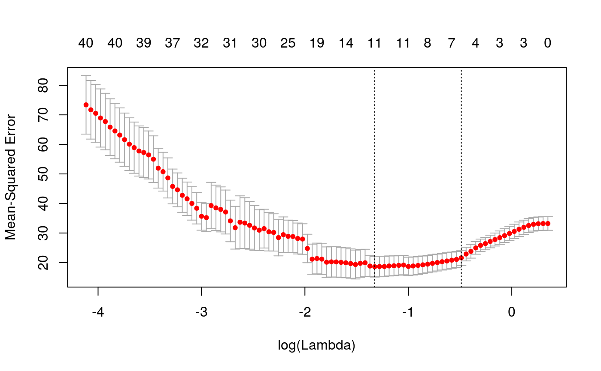
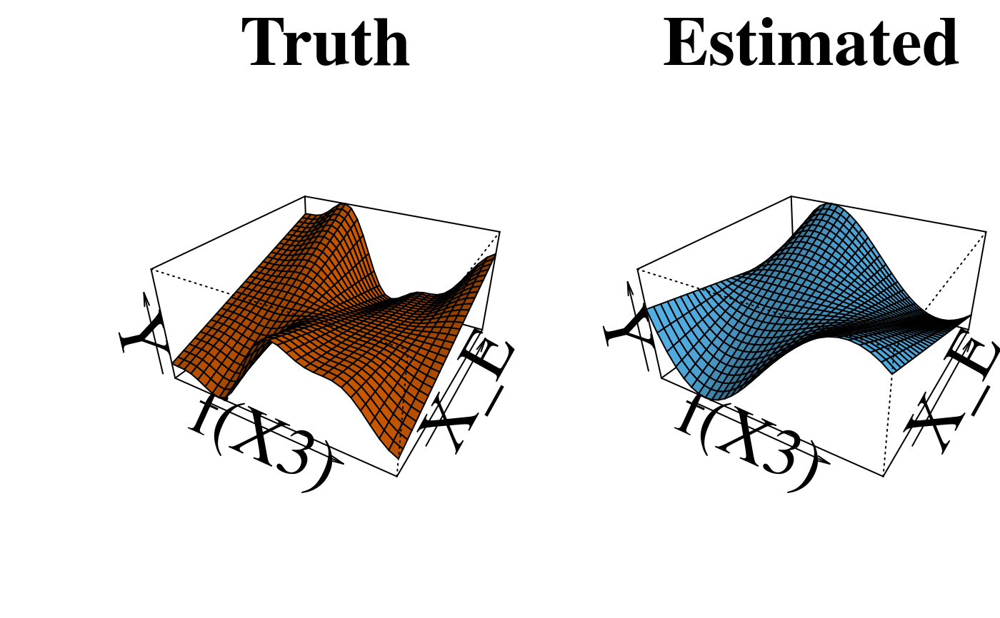

Takes a fitted sail object produced by sail() or
cv.sail()$sail.fit and plots a persp for a
pre-specified variable at a given value of lambda and on the scale of the
linear predictor. Currently only implemented for type="gaussian"
plotInter(object, x, xvar, s, f.truth, interation.only = TRUE, truthonly = FALSE, npoints = 30, col = c("#56B4E9", "#D55E00"), title_z = "", ...)
| object | a fitted |
|---|---|
| x | original data supplied to the original call to |
| xvar | a character corresponding to the predictor to be plotted. Only
one variable name should be supplied, if more than one is supplied, only
the first element will be plotted. This variable name must be in
|
| s | a single value of the penalty parameter |
| f.truth | true function. Only used for simulation purposes when the
truth is known. The function takes as a input two numeric vectors e.g.
|
| interation.only | if |
| truthonly | only plot the truth. |
| npoints | number of points in the grid to calculate the perspective plot. Default: 30 |
| col | color of the line. The first element corresponds to the color used
for the estimated function and the second element is for the true function
(if |
| title_z | title for the plot, Default: '' |
| ... | currently ignored |
A plot is produced and nothing is returned
if(interactive()){ # Parallel library(doMC) registerDoMC(cores = 4) data("sailsim") f.basis <- function(i) splines::bs(i, degree = 5) cvfit <- cv.sail(x = sailsim$x, y = sailsim$y, e = sailsim$e, basis = f.basis, nfolds = 10, parallel = TRUE) # plot cv-error curve plot(cvfit) # non-zero estimated coefficients at lambda.min predict(cvfit, type = "nonzero", s="lambda.min") # plot interaction effect for X4 and the true interaction effect also plotInter(cvfit$sail.fit, x = sailsim$x, xvar = "X3", f.truth = sailsim$f4.inter, s = cvfit$lambda.min, title_z = "Estimated") }